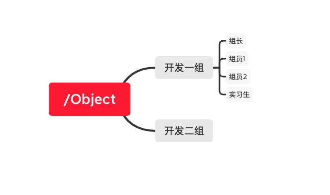
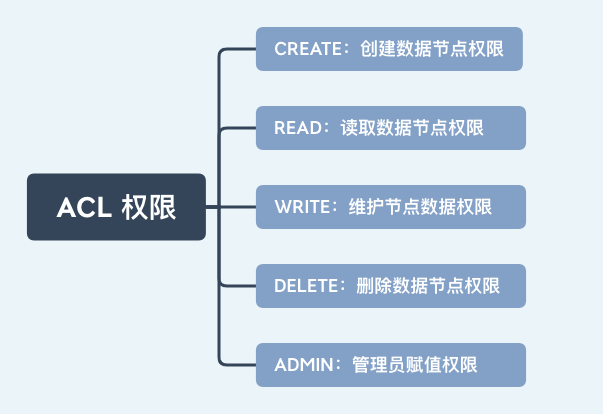
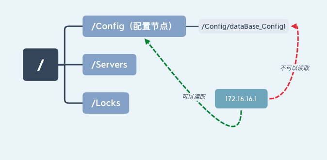
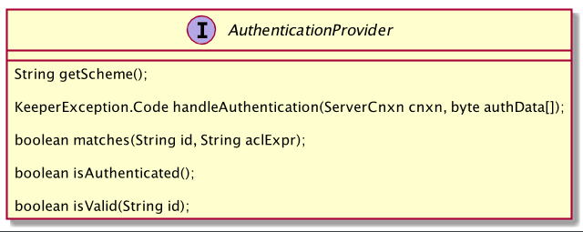

- 00 开篇词：选择 ZooKeeper，一步到位掌握分布式开发.md.html
- 01 ZooKeeper 数据模型：节点的特性与应用.md.html
- 02 发布订阅模式：如何使用 Watch 机制实现分布式通知.md.html
- 03 ACL 权限控制：如何避免未经授权的访问？.md.html
- 04 ZooKeeper 如何进行序列化？.md.html
- 05 深入分析 Jute 的底层实现原理.md.html
- 06 ZooKeeper 的网络通信协议详解.md.html
- 07 单机模式：服务器如何从初始化到对外提供服务？.md.html
- 08 集群模式：服务器如何从初始化到对外提供服务？.md.html
- 09 创建会话：避开日常开发的那些“坑”.md.html
- 10 ClientCnxn：客户端核心工作类工作原理解析.md.html
- 11 分桶策略：如何实现高效的会话管理？.md.html
- 12 服务端是如何处理一次会话请求的？.md.html
- 13 Curator：如何降低 ZooKeeper 使用的复杂性？.md.html
- 14 Leader 选举：如何保证分布式数据的一致性？.md.html
- 15 ZooKeeper 究竟是怎么选中 Leader 的？.md.html
- 16 ZooKeeper 集群中 Leader 与 Follower 的数据同步策略.md.html
- 17 集群中 Leader 的作用：事务的请求处理与调度分析.md.html
- 18 集群中 Follow 的作用：非事务请求的处理与 Leader 的选举分析.md.html
- 19 Observer 的作用与 Follow 有哪些不同？.md.html
- 20 一个运行中的 ZooKeeper 服务会产生哪些数据和文件？.md.html
- 21 ZooKeeper 分布式锁：实现和原理解析.md.html
- 22 基于 ZooKeeper 命名服务的应用：分布式 ID 生成器.md.html
- 23 使用 ZooKeeper 实现负载均衡服务器功能.md.html
- 24 ZooKeeper 在 Kafka 和 Dubbo 中的工业级实现案例分析.md.html
- 25 如何搭建一个高可用的 ZooKeeper 生产环境？.md.html
- 26 JConsole 与四字母命令：如何监控服务器上 ZooKeeper 的运行状态？.md.html
- 27 crontab 与 PurgeTxnLog：线上系统日志清理的最佳时间和方式.md.html
- 28 彻底掌握二阶段提交三阶段提交算法原理.md.html
- 29 ZAB 协议算法：崩溃恢复和消息广播.md.html
- 30 ZAB 与 Paxos 算法的联系与区别.md.html
- 31 ZooKeeper 中二阶段提交算法的实现分析.md.html
- 32 ZooKeeper 数据存储底层实现解析.md.html
- 33 结束语 分布技术发展与 ZooKeeper 应用前景.md.html
03 ACL 权限控制：如何避免未经授权的访问？
在前边的几节课程中，我们学习了数据模型节点、Watch 监控机制等知识。并利用这些知识实现了在分布式环境中经常用到的诸如分布式锁、配置管理等功能。这些功能的本质都在于操作数据节点，而如果作为分布式锁或配置项的数据节点被错误删除或修改，那么对整个分布式系统有很大的影响，甚至会造成严重的生产事故。而作为在分布式领域应用最为广泛的一致性解决框架，ZooKeeper 提供一个很好的解决方案那就是 ACL 权限控制。
说到 ACL 可能你会觉得陌生，但是提到权限控制相信你一定很熟悉。比如 Linux 系统将对文件的使用者分为三种身份，即 User、Group、Others。使用者对文件拥有读（read） 写（write）以及执行（execute）3 种方式的控制权。这种权限控制方式相对比较粗糙，在复杂的授权场景下往往并不适用。比如下边一个应用场景。

上图给出了某个技术开发公司的一个工作项目 /object 。项目中的每个开发人员都可以读取和修改该项目中的文件，作为开发组长也对这个项目文件具有读取和修改的权限。其他技术开发组的员工则不能访问这个项目。如果我们用之前说到的 Linux 权限应该怎么设计呢？
首先作为技术组长使用 User 身份，具有读、写、执行权限。项目组其他成员使用 Group 身份，具有读写权限，其他项目组的人员则没有任何权限。这样就实现了满足要求的权限设定了。
但是，如果技术组新加入一个实习人员，为了能让他熟悉项目，必须具有该项目的读取的权限。但是目前他不具备修改项目的能力，所以并没给他赋予写入的权限。而如果使用现有的权限设置，显然将其分配给 User 用户或者 Group 用户都并不合适。而如果修改 Others 用户的权限，其他项目组的成员也能访问该项目文件。显然普通的三种身份的权限划分是无法满足要求的。而 ZooKeeper 中的 ACl 就能应对这种复杂的权限应用场景。
ACL 的使用
下面我们来讲解一下如何使用 ZooKeeper 的 ACL 机制来实现客户端对数据节点的访问控制。
一个 ACL 权限设置通常可以分为 3 部分，分别是：权限模式（Scheme）、授权对象（ID）、权限信息（Permission）。最终组成一条例如“scheme:id:permission”格式的 ACL 请求信息。下面我们具体看一下这 3 部分代表什么意思：
权限模式：Scheme
权限模式就是用来设置 ZooKeeper 服务器进行权限验证的方式。ZooKeeper 的权限验证方式大体分为两种类型，一种是范围验证，另外一种是口令验证。所谓的范围验证就是说 ZooKeeper 可以针对一个 IP 或者一段 IP 地址授予某种权限。比如我们可以让一个 IP 地址为“ip：192.168.0.11”的机器对服务器上的某个数据节点具有写入的权限。或者也可以通过“ip:192.168.0.11/22”给一段 IP 地址的机器赋权。
另一种权限模式就是口令验证，也可以理解为用户名密码的方式，这是我们最熟悉也是日常生活中经常使用的模式，比如我们打开自己的电脑或者去银行取钱都需要提供相应的密码。在 ZooKeeper 中这种验证方式是 Digest 认证，我们知道通过网络传输相对来说并不安全，所以“绝不通过明文在网络发送密码”也是程序设计中很重要的原则之一，而 Digest 这种认证方式首先在客户端传送“username:password”这种形式的权限表示符后，ZooKeeper 服务端会对密码 部分使用 SHA-1 和 BASE64 算法进行加密，以保证安全性。另一种权限模式 Super 可以认为是一种特殊的 Digest 认证。具有 Super 权限的客户端可以对 ZooKeeper 上的任意数据节点进行任意操作。下面这段代码给出了 Digest 模式下客户端的调用方式。
//创建节点
create /digest_node1
//设置digest权限验证
setAcl /digest_node1 digest:用户名:base64格式密码:rwadc
//查询节点Acl权限
getAcl /digest_node1
//授权操作
addauth digest user:passwd
最后一种授权模式是 world 模式，其实这种授权模式对应于系统中的所有用户，本质上起不到任何作用。设置了 world 权限模式系统中的所有用户操作都可以不进行权限验证。
授权对象（ID）
接下来我们再看一下授权对象部分，其实这个很好理解，所谓的授权对象就是说我们要把权限赋予谁，而对应于 4 种不同的权限模式来说，如果我们选择采用 IP 方式，使用的授权对象可以是一个 IP 地址或 IP 地址段；而如果使用 Digest 或 Super 方式，则对应于一个用户名。如果是 World 模式，是授权系统中所有的用户。
权限信息（Permission）
介绍完授权方式以及授权对象，下面我们学习 ACL 请求信息中的最后一项：权限（Permission）。权限就是指我们可以在数据节点上执行的操作种类，如下图所示：在 ZooKeeper 中已经定义好的权限有 5 种：
- 数据节点（create）创建权限，授予权限的对象可以在数据节点下创建子节点；
- 数据节点（wirte）更新权限，授予权限的对象可以更新该数据节点；
- 数据节点（read）读取权限，授予权限的对象可以读取该节点的内容以及子节点的信息；
- 数据节点（delete）删除权限，授予权限的对象可以删除该数据节点的子节点；
- 数据节点（admin）管理者权限，授予权限的对象可以对该数据节点体进行 ACL 权限设置。

需要注意的一点是，每个节点都有维护自身的 ACL 权限数据，即使是该节点的子节点也是有自己的 ACL 权限而不是直接继承其父节点的权限。如下中“172.168.11.1”服务器有“/Config”节点的读取权限，但是没有其子节点的“/Config/dataBase_Config1”权限。

实现自己的权限口控制
通过上边的介绍我们了解了 ZooKeeper 中的权限相关知识，虽然 ZooKeeper 自身的权限控制机制已经做得很细，但是它还是提供了一种权限扩展机制来让用户实现自己的权限控制方式。官方文档中对这种机制的定义是 “Pluggable ZooKeeper Authenication”，意思是可插拔的授权机制，从名称上我们可以看出它的灵活性。那么这种机制是如何实现的呢？
首先，要想实现自定义的权限控制机制，最核心的一点是实现 ZooKeeper 提供的权限控制器接口 AuthenticationProvider。下面这张图片展示了接口的内部结构，用户通过该接口实现自定义的权限控制。

实现了自定义权限后，如何才能让 ZooKeeper 服务端使用自定义的权限验证方式呢？接下来就需要将自定义的权限控制注册到 ZooKeeper 服务器中，而注册的方式通常有两种。
第一种是通过设置系统属性来注册自定义的权限控制器：
-Dzookeeper.authProvider.x=CustomAuthenticationProvider
另一种是在配置文件 zoo.cfg 中进行配置：
authProvider.x=CustomAuthenticationProvider
ACL 内部实现原理
到目前为止我们学习了 ACL 权限控制机制应用层方面的相关知识，下面就深入到底层学习一下 ZooKeeper 是如何实现的。
客户端处理过程
我们先看一下客户端是如何操作的，我们以节点授权 addAuth 接口为例，首先客户端通过 ClientCnxn 类中的 addAuthInfo 方法向服务端发送 ACL 权限信息变更请求，该方法首先将 scheme 和 auth 封装成 AuthPacket 类，并通过 RequestHeader 方法表示该请求是权限操作请求，最后将这些数据统一封装到 packet 中，并添加到 outgoingQueue 队列中发送给服务端。
public void addAuthInfo(String scheme, byte auth[]) {
if (!state.isAlive()) {
return;
}
authInfo.add(new AuthData(scheme, auth));
queuePacket(new RequestHeader(-4, OpCode.auth), null,
new AuthPacket(0, scheme, auth), null, null, null, null,
null, null);
}
ACL 权限控制机制的客户端实现相对简单，只是封装请求类型为权限请求，方便服务器识别处理，而发送到服务器的信息包括我们之前提到的权限校验信息。
服务端实现过程
相比于客户端的处理过程，服务器端对 ACL 内部实现就比较复杂，当节点授权请求发送到服务端后，在服务器的处理中首先调用 readRequest（）方法作为服务器处理的入口，其内部只是调用 processPacket 方法。
private void readRequest() throws IOException {
zkServer.processPacket(this, incomingBuffer);
}
而在 processPacket 方法的内部，首先反序列化客户端的请求信息并封装到 AuthPacket 对象中。之后通过 getServerProvider 方法根据不同的 scheme 判断具体的实现类，这里我们使用 Digest 模式为例，因此该实现类是 DigestAuthenticationProvider 。之后调用其 handleAuthentication() 方法进行权限验证。如果返 KeeperException.Code.OK 则表示该请求已经通过了权限验证，如果返回的状态是其他或者抛出异常则表示权限验证失败。
public void processPacket(ServerCnxn cnxn, ByteBuffer incomingBuffer) throws IOException {
...
ServerAuthenticationProvider ap=ProviderRegistry.getServerProvider(scheme);
if(ap != null) {
authReturn = ap.handleAuthentication(new ServerAuthenticationProvider.ServerObjs(this, cnxn), authPacket.getAuth());
}
...
}
现在我们知道了权限认证的最终实现函数是 handleAuthentication 函数，而这个函数内部实现的逻辑就很清晰简单了，主要的工作就是解析客户端传递的权限验证类型，并通过 addAuthInfo 函数将权限信息添加到 authInfo 集合属性中。
public KeeperException.Code
handleAuthentication(ServerCnxn cnxn, byte[] authData)
{
String id = new String(authData);
try {
String digest = generateDigest(id);
if (digest.equals(superDigest)) {
cnxn.addAuthInfo(new Id("super", ""));
}
cnxn.addAuthInfo(new Id(getScheme(), digest));
return KeeperException.Code.OK;
...
}
这里我们重点讲解一下 addAuthInfo 函数，其作用是将解析到的权限信息存储到 ZooKeeper 服务器的内存中，该信息在整个会话存活期间一直会保存在服务器上，如果会话关闭，该信息则会被删，这个特性很像我们之前学过的数据节点中的临时节点。
经过上面的步骤，服务器已经将客户端 ACL 请求解析并将对应的会话权限信息存储在服务器上，下面我们再看一下服务器是如何进行权限验证的。首先，在处理一次权限请求时，先通过 PrepRequestProcessor 中的 checkAcl 函数检查对应的请求权限，如果该节点没有任何权限设置则直接返回，如果该节点有权限设置则循环遍历节点信息进行检查，如果具有相应的权限则直接返回表明权限认证成功，否则最后抛出 NoAuthException 异常中断操作表明权限认证失败。
static void checkACL(...){
...
for (ACL a : acl) {
if(authId.getScheme().equals(id.getScheme()..){
return;
}
}
throw new KeeperException.NoAuthException();
}
到目前为止我们对 ACL 权限在 ZooKeeper 服务器客户端和服务端的底层实现过程进行了深度的分析。总体来说，客户端在 ACL 权限请求发送过程的步骤比较简单：首先是封装该请求的类型，之后将权限信息封装到 request 中并发送给服务端。而服务器的实现比较复杂，首先分析请求类型是否是权限相关操作，之后根据不同的权限模式（scheme）调用不同的实现类验证权限最后存储权限信息。本课时的例子采用了授权接口 addAuth 而没有采用权限设置接口 setAcl，是因为权限设置接口相对简单，其核心功能点已经包括在授权接口实现中。而在授权接口中，值得注意的是会话的授权信息存储在 ZooKeeper 服务端的内存中，如果客户端会话关闭，授权信息会被删除。下次连接服务器后，需要重新调用授权接口进行授权。
结束语
ZooKeeper 作为分布式系统协调框架，往往在一个分布式系统下起到关键的作用。尤其是在分布式锁、配置管理等应用场景中。如果因为错误操作对重要数据节点进行变更或删除，对整个分布式系统影响很大，甚至会导致整个分布式服务不可用。所以当你在设计使用 ZooKeeper 的时候一定要考虑对关键节点添加权限控制。
这里，我们思考一个问题，如果一个客户端对服务器上的一个节点设置了只有它自己才能操作的权限，那么等这个客户端下线或被删除后。对其创建的节点要想进行修改应该怎么做呢？通过本课时的学习，我们可以通过“super 模式”即超级管理员的方式删除该节点或变更该节点的权限验证方式。正因为“super 模式”有如此大的权限，我们在平时使用时也应该更加谨慎。